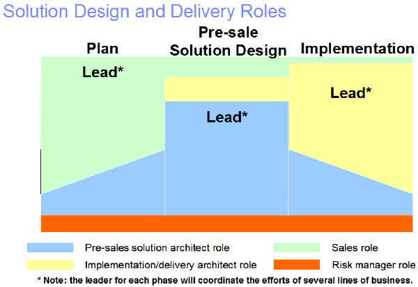
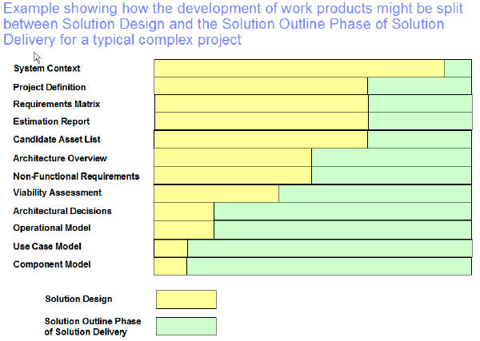

The audience for Team Solution Design is IT Architects and Specialists engaged in pre-sales solution design roles. Team Solution Design also provides guidance in planning and implementation activities for the pre-sale solution designer.
Audience: IT Architects, Specialists and Consultants engaged in pre-sales solution design roles – the Technical
Solution Architect role.
Purpose of Team Solution Design: To enable seamless collaboration between IBM Sales, Technical Solution Architects and delivery ITAs (from
IGS and/or client).
To provide guidance for activities unique to the pre-sales solution design process, in the context of CVM.
To guide involvement by the Technical Solution Architect in planning and delivery.
Objective: disciplined approach to pre-sales solution design process Helps communication with other pre-sales teammates
Helps you break a large project into manageable 'chunks‘
Helps you remember where you left off with a customer
Better hand-off and communication to delivery: IGS and customers (UML)
Satisfies design method requirement needed for certification
Team Solution Design will continue to evolve to meet our needs. This is supported by: Direction from a cross-IBM Steering Committee
Content governed by the Team Solution Design Board and Certified Instructors
Support from a Team Solution Design Program Manager
Collaboration via a Team Solution Design Community of Practice
Purpose
The Integration and Value Team project identified five key focus areas that drive the opportunity to create Client
Value and long-term profitable growth:
Serve distinct types of buying behaviors in our clients, and vary our approach to do this
profitably.
Recognize that selling only creates possibilities, delivering a positive total client experience creates
value.
Enhance skills and capabilities to serve the client’s agenda with content.
Create Client Value through principles driven leadership and empowered and capable
employees.
Implement a market facing model that places the client’s agenda before our own.
This Client Value Initiative provided the key drivers for a unified approach to solution design. The key findings
from the baseline study carried out in Client Value Initiative were:
Disparate processes by brand (account planning, Solution Design, delivery, client sat, IBM planning/measures)
impeding ‘one face’ to the client.
Existing client-facing processes were designed for HW and SW; services processes added later without integration.
Processes were designed to handle single brand transactions; multi-brand not handled as well.
Client value was not the focus of nor designed into processes which were often optimized for internal needs.
These factors necessitated adoption of a single pre-sale solution design method for by all brands and service
organizations which will be defined in the Unified Method Framework. Team Solution Design is that solution design
method.
Description
Team Solution Design was designed based on the following principles:
Support SSM/CVM in a coordinated way.
Translate selling method activities to counterpart pre-sale technical activities.
Keep Team Solution Design as a thin layer that "wraps" and reuses existing methods and assets. Take an
inclusive approach.
Focus on GS Method (now UMF) as primary underlying method.
Conform to ADS (Application Description Standard) where relevant.
Provide guidance for using appropriate aspects of multiple methods and assets.
Provide pre-sale guidance to IT Architects, Specialists and Consultants for activities unique to the pre-sale
technical role.
Support collaboration with others involved in pre-sales and hand-off to delivery ITAs.
Provide a sense of community and a forum to share experiences.
Update and evolve Team Solution Design based on real pre-sale solution design experiences.
The philosophy of Team Solution Design solution design:
Pre-integrated, flexible method:
Pre-defined process, activities, tasks and work products. No Method Adoption Workshop required.
Work products are comprehensive enough to capture input when you get it -- you rarely control timing.
Provides in-line guidance including use of additional work products and examples of asset reuse.
Flexible enough to adapt to reassessment of Buying Behavior or size and complexity (BTT).
Adds value/framework for vastly different scenarios like partial or brief activities (or part of the solution for
specialists).
Even when a method is not really needed, provides common vocabulary, approach to capturing notes, architectural way
of thinking.
Outside-In technique:
Outside-in approach is used, first with planning and then solution design.
Natural flow from System Context and Use Cases to Architecture Overview, Component and Operational Models.
Encourages the reuse of assets, from course-grained to detailed, business to IT, requirements to solution.
Iterative approach:
Team Solution Design activities drive design process, not tasks or work products.
Iterative approach with suggested iteration points.
Tasks are done as client situation allows, often in parallel.
Effective iteration through specific guidance on traceability of each decision back to requirements.
Iterative approach allows work products to evolve from general to more specific.
Varied level of elaboration:
Each work product goes through multiple elaborations -- by you or others before and after the solution is "sold".
Earlier versions of work products are useful in their own right. For example:
First use cases can be used to drive custom demo.
Services View of Architecture Overview Diagram used to confirm key functions
needed.
Includes multiple views (Architecture Overview Diagram), or for a specific audience (Component Model).
Allow for the “uneven” level of elaboration likely in pre-sale. What you need to know varies for different parts of
the solution.
Focuses on the level of design needed to ensure the solution will work, even if we are responsible for only a part.
Provides just enough detail to assure the client that requirements are understood and solution will address
them.
Usage
Usage Guidance
The following diagram illustrates some of the roles involved in planning, solution design and implementation. It shows
who leads and the other participants. Team Solution Design primarily provides guidance to the Technical Solution
Architect. An IT Architect, Specialist or Consultant can perform this role. Team Solution Design also
provides guidance to other participants involved in pre-sale solution design.

How does Team Solution Design compare to Solution Outline phase of Solution Delivery? The following chart the
relative contribution of each.

Key Considerations
Team Solution Design (formerly TeAMethod) has continually evolved since it's creation in 1999. It is used
today around the world by S&D, SWG, STG and, to a lesser degree, by IGS. With the Client Value Initiative,
Team Solution Design is being enhanced to:
Aligned with Client Value Method (CVM replaced SSM). This resulted in the renaming and
re-factoring of phases, activities and some tasks.
Provided guidance for solutions emanating from any of the three Buying Behaviors for the
Opportunity: Value for the Money, Trusted Supplier or Innovation Partner.
Incorporated Business Transaction Types – an assessment of size, complexity and risk – and
integrated guidance with Buying Behavior for the Opportunity.
Defined Team Solution Design in UMF. Work products were re-factored to exploit
existing UMF content.
Added guidance on bringing in delivery and risk management early in solution design and staying involved after
the contract is signed.
Provided alignment with Quality Practices. TeamSD work products feed consistent Quality
Review checkpoints.
Increased emphasis on Plan Phase work products: base of knowledge making opportunity
identification easier and shortening the time to complete Solution Design.